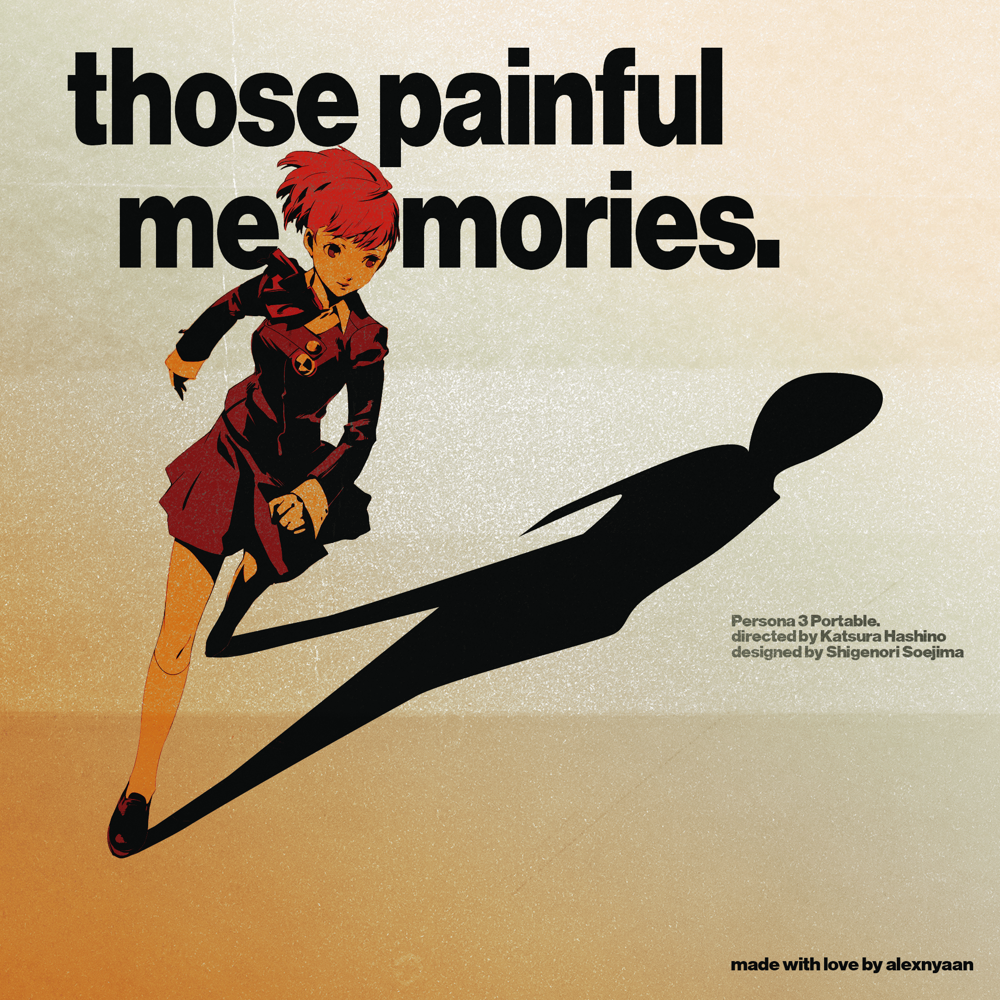
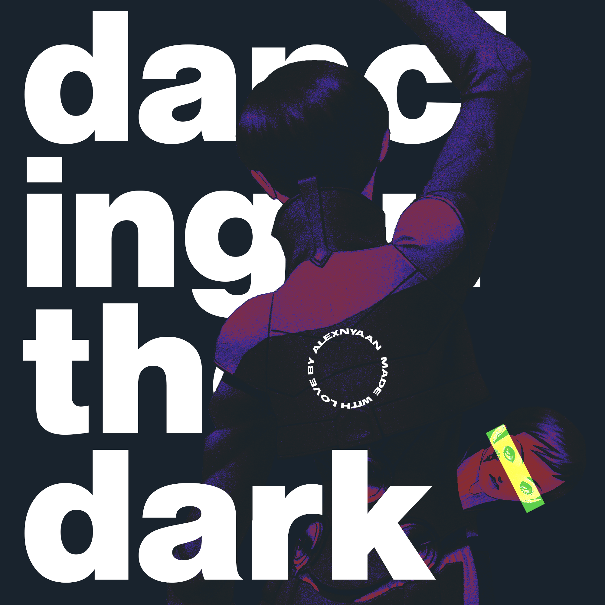

UI/UX Projects


StuPlan! - Android Study Planner App
I designed StuPlan!, an Android-based application focused on simplicity and productivity. Key design decisions included
- Intuitive Dashboard: A clean summary of daily schedules and upcoming deadlines to reduce cognitive load
- Smart Reminders: Custom notification system for tasks and exams to ensure students never miss a due date.
- Progress Visualization: A dedicated Statistics Page using charts to track study time and task completion, motivating users to stay consistent.
More UI Works


Personal Works





Social Media Designs
My freelance work on Atlus Info Indonesia as Editor!